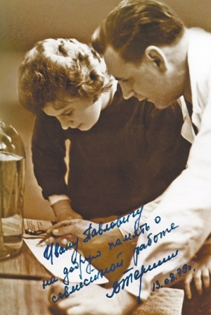

Левша[7]. Детство и юность провёл в горных районах Киргизской АССР[7]. По собственному свидетельству, «до 7 лет почти не знал русского языка»[8].
Окончил Киргизский медицинский институт (1951). Был призван в армию, где занялся авиационной медициной[9], на протяжении 8 лет служил на Дальнем Востоке[10].
В 1959 году зачислен в Институт авиационной и космической медицины Минобороны СССР[7], затем работал в Институте медико-биологических проблем Минздрава СССР[11]. В 1964 году ему была поручена разработка методов и средств оказания медицинской помощи космонавтам при полётах различной продолжительности, в том числе и к другим планетам[9], И. П. Неумывакин достиг должности начальника соответствующего отдела.
В ряде источников[12][13] упоминается докторская диссертация И. П. Неумывакина «Принципы, методы и средства оказания медицинской помощи космонавтам при полетах различной продолжительности» (1982 г.) по специальности 14.4.00.32 «Авиационная и космическая медицина», а сам он назван доктором медицинских наук и профессором[14], в частности на сайте nanmprof.org[15] Тем не менее, его диссертация по-видимому отсутствует в свободном доступе. На сайте nanmprof.org говорится, что она была защищена в Институте медико-биологических проблем Минздрава СССР в 1983 году.
В 1989 году вышел на пенсию и занялся народным целительством[10][5]. Возглавлял собственный Лечебно-профилактический центр в Москве. Благодаря содействию депутата Госдумы РФ Олега Валенчука с 2012 г. открыт Центр развития И. П. Неумывакина вблизи г. Кирова (Кировская область), консультируемый И. П. Неумывакиным и руководимый близким его последователем заслуженным врачом России Ю. Б. Войханским[16].
И. П. Неумывакин являлся помощником депутата Государственной Думы РФ[17].
В 2017 году И. П. Неумывакин обратился за помощью к общественности. Как стало известно с его слов, его падчерица со смертью его супруги лишила его всего имущества. На фоне происходящего учёный ослеп, однако продолжает работать над своими трудами[18].